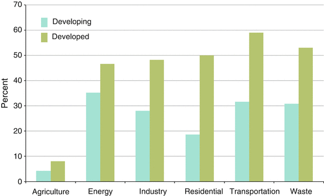

25.1 Introduction
Urbanization is a key driver of global environmental change and linked to urban climate and climate change (While and Whitehead 2013; Rosenzweig et al. 2011a; Huang et al. 2008; IEA 2008). Urbanization impacts the atmosphere’s regulatory ecosystem services that augment climate variability at the local, regional and global scales. The accompanying climate consequences can lead to increased risk exposure for urban citizens (McGranahan et al. 2007) and vulnerabilities for urban biodiversity. Understanding the role of urbanization in climate change and urban climate change risk, and in vulnerability is critical for the production of effective climate change mitigation and adaptation measures (Rosenzweig et al. 2010; Romero-Lankao and Qin 2011; Seto and Satterthwaite 2010; Güneralp and Seto 2008), promotion of sustainable urban habitats and transition to increased urban resilience for sustainability (Solecki 2012; Solecki et al. 2011).
The chapter is divided into three main sections. The first presents a review of the impacts of urbanization on climate at varying spatial scales. The second section reviews specific vulnerabilities related to climate change that are important for urban biodiversity. The third section identifies several important impacts of climate change on urban biodiversity.
25.2 Urban Impacts on Climate
Urbanization is implicated in local, regional and global climate change in a number of ways (Seto and Shepherd 2009). The chapter briefly reviews the impact of urbanization on climate at each of these scales. At the local and regional level the impacts of urbanization on climate can be divided into three broad categories: urban heat island effect (UHI), impacts on precipitation and impacts to air quality. At the global scale the chapter reviews the contribution of cities to climate change through the production of greenhouse gas emissions.
25.2.1 Local and Regional Impacts of UHI
Inhabitants of urban area are subject to climatic conditions that represent a significant modification of the pre-urban climatic state including the well-known urban heat island (UHI) effect (e.g., Chen et al. 2011; Iqbal and Quamar 2011; Kolokotroni et al. 2010). UHI arises from the modification of radiation, energy and momentum exchanges resulting from the built form of the city, together with the emission of heat, moisture, and pollutants from human activities. Urban temperatures are typically 3–4 °C higher than surrounding areas due to UHI (Oke 1997), but can be as high as 11 °C warmer in urban “hot spots” (Aniello et al. 1995; Oke 1982). Dark surfaces such as asphalt roads or rooftops, however, can reach temperatures 30–40 °C higher than surrounding air (Frumkin 2002). The UHI effect is considered a significant urban environmental issue of the twenty-first century (for a review see Rizwan et al. 2008; McKendry 2003; Landsberg 1981).
The UHI effect does not contribute to global warming (Alcoforado and Andrade 2008; Parker 2004; Peterson 2003). Studies indicate that effects of urbanization and land use change on the land-based temperature records are negligible (0.006 °C per decade) as far as hemispheric- and continental-scale averages are concerned (Trenberth et al. 2007). At the same time, as cities increase in size and number, the UHI effect may play a role in regional climate. One study, for example, presents evidence for a significant impact of urbanization on the regional climate in southeast China (Kaufmann et al. 2007). In this case, the region has experienced rapid urbanization and estimates suggest a mean surface warming temperature of 0.05 °C per decade. The spatial pattern and magnitude of these estimates also are consistent with those of urbanization characterized by changes in the percentage of urban population and in satellite-measured greenness (Zhou et al. 2004). One study which examines the trends of urban heat island effect in East China found clear connection between urbanization and surface warming over the region. Overall, UHI effects contribute 24.2 % to regional average warming trends in this region (Yang et al. 2011). These results are consistent with a recent 50 year study that found most temperature time series in China affected by UHI (Li et al. 2004).
25.2.2 Local and Regional Changes in Precipitation
Urbanization also affects humidity, clouds, storms and precipitation. Numerous studies describe shifts in precipitation amounts in and around cities compared to areas of nearly areas of lower population density (for a review see Souch and Grimmond 2006; Shepherd 2005). The exact mechanisms by which these urban precipitation patterns emerge are poorly understood (Lowry 1998). Unique aspects of urban areas that might affect precipitation levels include high surface roughness that enhances convergence, UHI effects on atmospheric boundary layers and the resulting downstream generation of convective clouds, generation of high levels of aerosols that act as cloud condensation nuclei sources, and urban canopy creation and maintenance processes that affect precipitation systems. No matter what the mechanisms, intensely urban areas and those that are directly downwind of urban areas are cloudier and wetter, with heavier precipitation and more frequent heavy rain events than those that are not, but within the same region (Lei 2011; Changnon 1979). Average increases of 28 % in monthly rainfall rates have been identified within 30–60 km downwind of cities (Shephard et al. 2002). Analysts also have examined whether urban areas are analogous to a warm lake in the winter and therefore enhance snow precipitation (Shepherd and Mote 2011).
25.2.3 Local and Regional Air Pollution
The composition of the atmosphere over urban areas differs from undeveloped nearby areas (Pataki et al. 2006). Most importantly, urban air contains high concentrations of pollutants. Ambient urban air pollution refers to gases, aerosols and particles that harm human well-being and the environment. Cities are the sources of significant air pollution, since they are the location of intense fossil fuel consumption and land use changes. Air pollution has multiple health, infrastructure, ecosystem and climate impacts (Molina and Molina 2004).
Once emitted, the dispersion and dilution of air pollutants are strongly influenced by meteorological conditions, especially by wind direction, wind speed, turbulence and atmospheric stability. Topographical conditions and urban structures like street canyons for example, have an effect on these parameters. Cities that develop in valleys often undergo atmospheric inversions, which trap pollution and enhance effects.
The quality of urban air for at least the past two decades has been defined as a worldwide problem (see Elsom 1996 as an early reference illustrating this issue). In Europe, over the period 1997–2008, 13–62 % of the urban population may have been exposed to concentrations of particulate matter, ozone or nitrogen dioxide above the EU air-quality limits (European Environment Agency 2010). In the United States, over 154 million people, approximately half the national population, suffer from breathing high levels of air pollution (American Lung Association 2011).
While urban air pollution is a ubiquitous problem, trends vary by development status. In countries which were already heavily industrialized in the twentieth century, air pollutants, such as carbon monoxide, sulfur dioxide and total suspended particulates are decreasing dramatically; at the same time nitrogen oxides and non-methane volatile organic compounds have reached a plateau or demonstrate weakly decreasing trends (Holdren and Smith 2000). In many developing world cities, air pollutants have dramatically increased in recent decades. In cities of middle income countries, however, air pollution and the requisite damage therein is greatest (McGranahan and Murray 2003). Recent predictions suggest that under business as usual conditions, urban air pollution in 2050 will increase in the developing world with significant, “disastrous” effects on citizen quality of life (OECD 2012)
Increasing motor vehicle traffic is a major air pollution source (Fenger 2009). Motor vehicles emit carbon monoxide, hydrocarbons, nitrogen oxides and toxic substances including fine particles (and lead in countries still using high lead content fuel). Secondary pollution, such as ozone, is a product of these primary pollutants, which react together in the atmosphere. Given the trends in automobile usage in both developed and developing countries, automobiles are a major source of air pollutants (Walsh 2003). In 2009, for example, Chinese sales in automobiles exceeded those in the USA (Ward’s 2010).
Most urban air pollution attention has focused on mega-cities (Gurjar et al. 2008; Butler et al. 2007; Molina and Molina 2004; Gurjar et al. 2004; Mayer 1999). However, it is not the largest cities in the world that have the worst pollution levels. A recent global study that examined air pollution trends in over 8,000 cities suggests that urban nitrogen oxides, non-methane volatile organic compounds, carbon monoxide and sulfur dioxide emissions levels were highest in Asia (Sarzynski 2012). This suggests, as some have argued, that some of the smaller cities of the world are suffering from some of the worst environmental challenges (Hardoy et al. 2001).
Urban air pollution can have metropolitan regional effects. Emissions from cities may play a role in regional climate impacts, as high levels of fine particulate matter can scatter and/or absorb solar radiation (Molina and Molina 2004). The visible manifestation of this regional air pollution is a brownish layer or haze pervading many areas of Asia (UNEP and C4 2002; Ramanathan and Crutzen 2002). Hot spots for these atmospheric brown clouds include South Asia, East Asia, and the much of Southeast Asia. Through the examination of temperature records in urbanized regions of China and India affected by the haze, researchers have demonstrated a significant cooling effect since the 1950s (Kaiser and Qian 2002; Menon et al. 2002). The persistence of the haze has significant implications to regional and global water budget, agriculture and health.
25.2.4 Global Impacts of Urban Greenhouse Gas Emissions
Dense settlements also are responsible for land use change and the concentration of human activities (Seto et al. 2010). Both these factors concentrate and enhance the provision of infrastructure, energy use and socio-economic metabolism, all of which intensify and concentrate the production of greenhouse gas emissions (Grubler et al. 2012). While some argue that the concentration of population in dense settlements lowers greenhouse gas emissions through a decrease in per capita emissions (Dodman 2009; McDonald and Marcotullio 2011), few disagree that as the global urbanization level increases, cities will be increasingly key sources of emissions.
Despite the importance of urbanization and cities to environmental change, the role of cities in climate change is not well understood (Dhakal 2010). For example, a recent review of the literature suggests that cities contribute somewhere between 40 and 85 % of total anthropogenic GHG emissions (Satterthwaite 2008). This wide range is matched by the variation in figures for GHG emissions from individual cities. In this section, the literature on the role of cities as producers of GHGs is reviewed. While infrastructure such as buildings, streets, pipes, tracks and trains, have significant energy embodied in their structure (Ramaswami et al. 2008), global life-cycle estimates of urban infrastructure do not exist. At the same time, however, an increasing numbers of studies have identified urban scale GHG levels (see for example, Marcotullio et al. 2012).
Of great importance to identifying the role of cities and urbanization in climate change is the definition of the city and the definition of what urban activities are included in the GHG protocol. Currently no consensus of “urban” (Marcotullio and Solecki 2013; also see Chap. 1) exists and accounts of urban GHG emissions have used a variety of definitions ranging from including only governmental activities to including activities within a metropolitan region (e.g., Bader and Bleischwitz 2009; Chicago Climate Task Force 2008). With the inclusion of larger areas and greater “scope” (i.e., a more inclusive definition of urban residents’ activity) the urban GHG emissions levels change. The example of an increase in urban area’s influence on urban GHG emissions is straightforward: as analysts include larger areas, the level of total GHG emissions rises per city. For example, emissions levels within the political boundaries of Chicago are lower than within the entire Chicago metropolitan area (Chicago Climate Task Force 2008). On the other hand, the change in GHG levels per capita with the increase in geographic scale is less obvious. Suburban areas in the developed world have higher emissions per capita than urban areas. Therefore, including metropolitan areas rather than core urban centers may increase GHG emission per capita levels.
The greater “scope” of emissions includes accounting for the emissions related to more activities, including consumption. The classic argument is that urban residents are responsible for electricity demand from electricity production plants located outside of urban or even metropolitan borders. The GHG emissions associated with this demand are arguably urban, but do not take place within the urban border. Some argue that urban GHG accounts must include these emissions, as they would otherwise be apportioned to rural areas (Kennedy et al. 2011).
Analysts have recently identified a set of standards in urban GHG protocols (Kennedy et al. 2010). Unfortunately, it still remains difficult to compare urban GHG emissions levels due to varying definitions of the city, measurement techniques and scope of analysis (Bader and Bleischwitz 2009). Urban GHG emissions accounts from individual cities vary considerably. For example, estimates of CO2-eq emissions per capita in London range from 4.4 tonnes (Sovacool and Brown 2010) to 6.2 tonnes (Greater London Authority 2010) to 9.6 tonnes (Kennedy et al. 2011) (a more than 100 % difference). It is therefore important to review all urban GHG data carefully.
In a recent article, analysts have demonstrated the variability of urban GHG emissions (Hoornweg et al. 2011). Specifically, this study argues that average per capita GHG emissions for cities vary from more than 15 tonnes of carbon dioxide equivalent (tCO2e) (Sydney, Calgary, Stuttgart and several major U.S. cities) to less than half a tonne (various cities in Nepal, India and Bangladesh). This variation is due to a number of factors including the size of the city, the population density, the affluence and the urban growth rates (Marcotullio et al. 2012). Some have also identified climate as an important determinant of urban GHG emissions because of associated heating and/or cooling requirements (Kennedy et al. 2011).
Estimates of urban share of global GHG emissions have been presented as varying widely (Satterthwaite 2008). One relatively recent study by the International Energy Agency (IEA 2008) has become widely cited. The IEA (2008) estimates that urban areas currently account for more than 71 % of energy-related global greenhouse gases and this is expected to rise to 76 % by 2030. In another study, using the year 2000 as a baseline, urban GHG emissions range between 38 and 49 % of total emissions, or between 12.8 and 16.9 billion tonnes CO2-eq. (Table 25.1) (Marcotullio et al. 2013). Both these studies suggest that urban emissions levels vary in different regions. Typically, African urban GHG emission shares are lowest of any region and North American urban GHG emission shares are highest. Overall, urban GHG emissions in developing countries have a much lower share of total emissions than those of the developed world (Fig. 25.1).
Table 25.1
Top 15 highest GHG urban extent emitters in the year 2000
Urban center | Country | Population (thousands) | Total emissions (million tonnes CO2-eq) |
|---|---|---|---|
Tokyo | Japan | 76,301 | 644.4 |
New York | USA | 26,562 | 443.9 |
Los Angeles | USA | 18,320 | 270.0 |
Chicago | USA | 10,596 | 213.8 |
Seoul | South Korea | 20,881 | 172.1 |
Essen | Germany | 10,597 | 171.6 |
Taipei | Taiwan | 18,229 | 165.6 |
Moscow | Russia | 14,847 | 158.2 |
Shanghai | China | 15,155 | 137.9 |
San Jose | USA | 8,301 | 119.1 |
Boston | USA | 7,077 | 117.7 |
Houston | USA | 4,326 | 122.3 |
Detroit | USA | 4,444 | 100.2 |
Baltimore | USA | 6,572 | 97.6 |
London | UK | 12,997 | 93.0 |

Fig. 25.1
Percentage of total GHG emissions by sector that are attributed to urban areas for developing and for developed countries, during the year 2000. Country classifications of developing and developed countries are based upon UN country categories for 2000. For examples of these categorizations see the statistical annex of the World Economic Situation and Prospects (WESP) 2012 (UN-DESA – DPAD 2012) (Modified from Marcotullio et al. 2013, submitted)
Amongst urban GHG emissions, the energy sector accounts for the largest share ranging from 54 to 65 % of total urban GHG emissions. As Hoornweg et al. (2011) state, energy-related emissions is the largest single source of GHG emissions from a production-based perspective and is even large from a consumption-oriented perspective. Agricultural activities typically provide the smallest share of total urban GHG emissions. Transportation accounts for a significant level; one study suggests that transportation is responsible for approximately 20 % of total urban GHG emissions (Marcotullio et al. 2013).
The largest urban GHG emitters tend to be the largest urban areas, but population size is not the only determining factor in emission levels (Table 25.1). Hoornweg et al. (2011) suggest that the sheer magnitude of some larger world cities ranks them with national emissions levels. For example, Shanghai’s population and greenhouse gas emissions would place it in the world’s “top 40” if it were a separate country. If all member cities of the C40 group are combined, the resultant emissions levels would be among the top four highest national GHG emissions in the world for each category. In another analysis, the top 15 largest urban GHG emitters together account for approximately 23 % of total urban GHG emissions and 8.6 % of total global GHG emissions.
The pattern of the largest urban per capita emitters follows a different pattern. The 15 largest per capita emitters are typically smaller urban centers (typically with populations under 200,000 with many under 100,000) that are locations for energy conversion and heavy- or chemical-industry, mining, or large scale livestock centers. The aggregate emissions from these 15 centers are much lower than the largest urban areas; approximately 2.6 % of total urban GHG emissions and <1.0 % of total global GHG emissions, but due to low populations they stand out as high per capita contributors (Marcotullio et al. 2013).
25.3 Climate Change Variability in Relation to Urban Areas
Climate change directly impacts urban centers. Climate change impacts include the increased occurrence of extreme weather events such as heavy rainfall, warm spells and heat events, drought, intense storm surges and sea-level rise (see Hunt and Watkiss 2011; Romero-Lankao and Dodman 2011; Rosenzweig et al. 2011b). Climate change is likely to accelerate ecological pressures, as well as interact with existing urban environmental stresses to increase vulnerability (Leichenko 2011; Wilbanks and Kates 2010), particularly those associated with urban biodiversity. For example, New Orleans’ geophysical vulnerability is shaped by its low-lying location, accelerating subsidence, rising sea levels, and heightened intensity or frequency of hurricanes due to climate change (Wilbanks and Kates 2010; Ernstson et al. 2010). Alternatively, cities in arid regions already struggle with water shortages. Climate change will likely further reduce water availability because of shifts in precipitation and/or evaporation paired with rising water demand (Gober 2010). Four important climate-related issues in urban areas that increase urban biodiversity vulnerability—including flooding, temperature changes, geo-hydrology, and air pollution—are reviewed in the following sections.
25.3.1 Inland and Coastal Flooding
Heavy rainfall and storms surges could impact urban areas through flooding which in turn could lead to the destruction of properties and public infrastructure, contamination of water sources, water logging, loss of business and livelihood options, and increase in water borne diseases as noted in wide range of studies (Rosenzweig et al. 2010). Extensive studies have attempted to better model the frequency and condition of extreme precipitation events and associated flooding (i.e., Onof and Arnbjerg-Nielsen 2009; Ranger et al. 2011).
Sea-level rise represents one of the primary, if not the primary, shift in vulnerability in urban areas that results from climate change, given the accelerating urban growth in coastal locations (Dossou and Glehouenou-Dossou 2007; McGranahan et al. 2007). Rising sea levels and the associated coastal and riverbank erosion or flooding with storm surges could all lead to widespread vulnerability of populations, property, coastal vegetation and ecosystems, and threaten commerce, business, and livelihoods (Carbognin et al. 2010; Hanson et al. 2011; Pavri 2010). Structures built on in-filled soils in the lowlands of, for example, Lagos, Nigeria; Mumbai, India; and Shanghai, China are more exposed to risks of flood hazards than similar structures built on consolidated materials (Adelekan 2010; Revi 2008).
25.3.2 Urban Heat and Cold
In general, climate change will bring increased annual and seasonal temperatures, and declines in mean monthly, annual, and seasonal average temperatures, which will have important implications for ecosystem function in cities. Heat waves and warm spells could exacerbate urban heat island effects, including increased air pollution and heat-related health problems (Hajat et al. 2010), increased salinity of shallow aquifers in drylands due to increased evapotranspiration and the spread of some diseases, including malaria. The probability will increase for long term and spatially extensive heat waves, such as the heat wave that occurred across continental Europe in 2003. Increased warming is predicted in a wide variety of cities including sub-tropical, semi-arid, and temperate sites (Thorsson et al. 2011). Conversely, widespread reduction in cold waves will reduce heating demands (Mideksa and Kallbekken 2010). Increased climate variation resulting occasionally in more intense cold waves (such as those experienced in Ireland in recent years) also could have significant localized impacts.
25.3.3 Geo-Hydrological Hazards
Climate related hazard exposure will vary due to differences in the geomorphologic characteristics of the city. Climate change will increase the risk and vulnerability of urban ecosystems to a range of geohydrological hazards including groundwater and aquifer quality reduction (e.g., Praskievicz and Chang 2009; Taylor and Stefan 2009) and subsidence, and increased salinity intrusion. Subsidence caused by groundwater extraction has led some land in cities like Shanghai to sink by a several meters or more. This is compounded when groundwater is saline (thus eroding structures) or rainfall increases in intensity and duration. While urban areas located in lowlands will have higher risk to flooding, urban centers located in hilly areas will be exposed to landslides.
Drought will lead to food insecurity, increase in fuelwood prices, water shortages, decline in ecosystem function, and an increase in water related diseases (e.g., Farley et al. 2011; Herrfahrdt-Pahle 2010; Vairavamoorthy et al. 2008). Averaging across all climate change scenarios, recent findings suggest that nearly 100 million more city-dwellers “will live under perennial shortage under climate change conditions than under current climate” (McDonald et al. 2011, p. 2).
25.3.4 Air Pollution
Climate change has been linked to a spectrum of air pollution conditions. For example, increased temperatures will promote the increased production of secondary air pollutants such as ozone, NOx and SOx. In more remote stretches of metropolitan areas, climate change also will likely increase the frequency of wildfires (Moritz et al. 2012), the probability of which also has been heightened by sprawl in the urban-rural interface. Climate change may also affect the distribution, quantity, and quality of pollen, as well as altering the timing and duration of pollen seasons; the burden of asthma and allergies also could rise as a result of interactions between heavier pollen loads and increased air pollution, or as climate change promotes more frequent wildfires (Shea et al. 2008).
25.4 Key Urban Biodiversity Vulnerabilities
Cities have a surprisingly high level of biodiversity (Chap. 10) and proximity to protected areas and biodiversity hotspots (Chaps. 3 and 22) and this biodiversity improves both human well-being and the quality of life in urban areas (McGranahan et al. 2005). In order to help maintain and even enhance levels of urban biodiversity, it is important to understand the role of cities in climate change, the impacts of climate change on cities, and the vulnerability of urban biodiversity to potential impacts.
Climate change will have profound impacts on a broad spectrum of city functions, infrastructure, and services (Rosenzweig et al. 2011b; UN-Habitat 2011). It will exacerbate the general stresses already placed on urban ecosystems, and will present particular difficulty for ecosystems that exist within marginal or limited ecosystem niches, such as wetlands. These risks and vulnerabilities vary with the temporal and spatial scale and occurrence (i.e., chronic vs. acute) and are expected to increase over the next several decades. Three key aspects related to urban biodiversity are vulnerable to climate change impacts and therefore critical for policy. These include the quality and extent of urban ecosystems habitat, the provision of green infrastructure, and urban wetlands.
25.4.1 Impact on the Quality and Extent of Natural Ecosystems in Urban Areas
Urban systems will be impacted by cascading risks due to climate change (Hunt and Watkiss 2011). Climate stresses, particularly extreme events, will have effects across interconnected systems—within specific sectors and across multiple sectors (Gasper et al. 2011). The cascading effects of climate change can have both direct and indirect economic impacts (Hallegatte et al. 2011; Ranger et al. 2011), and can extend from infrastructure and built environment sectors to natural ecosystems in urban areas (Frumkin et al. 2008; Keim 2008).
Habitat for native plants and animals can hold significant value for urban residents. Wildlife appreciation activities including birding, hiking, and fishing make substantial contributions to the well-being of city dwellers. Many cities have successfully profited from their ecosystem habitats and species through a variety of passive recreation programs for students and others groups. It is important to recognize that it is difficult to isolate climate change signals from the other stressors facing the urban ecosystems. At the same time, there is literature that suggests the natural areas in cities and urban biodiversity will be affected by climate change. For example, shifts in urban system disturbance regimes (e.g., fire, wind, and drought) are mechanisms that can introduce phase changes (e.g., sudden or abrupt changes in habitat condition and quality) and pest species (e.g., invasive species/diseases/parasites) in cities. Invasive species, including both plant and animal species, could become more established with extended drought or other disturbances. Expansion or strengthening of disease pathogens could threaten locally important species such as predators of insect pests, which in turn could increase the number of the specific pest species. Winter warming and absence of cold waves will benefit certain species of insect pests and diseases that are sensitive to prolonged periods of cold; other invasive species may be able to respond more readily to warmer winter- and spring-time temperatures.
Climate shifts will impact the resources available to urban wildlife including insects, birds, and other larger animals by changing the quantity, quality, and timing of forage for animals. It also can adjust the speed of onset of emerging diseases and other pathogens and alien/invasive species entering the extended regions around cities. The shifts in forage and in species composition will result in changes in species competition and pest management regimes. Increased drought conditions will have a significant impact on ecosystem health beyond the relative strength of the drought. This is because reduced stream flows affect aquatic habitats and may cause or exacerbate chemical water quality problems such as eutrophication of already stressed urban ecosystems.
Furthermore, it is clear that some climate shifts will affect ecosystem habitats more directly than others. For example, climate change will likely result in identifiable forest tree species shifts, such as the decline in one species to be replaced by another better suited to the likely warming and moisture-limiting climate. This shift could result in an important loss of forage for one or more animal species, while the forest composition shift could have negligible impacts on a forest’s net value for watershed protection and water quality (i.e., surface and sub-surface water supply recharge will still take place). Locally endangered species are particularly susceptible to climate change-related habitat shifts because they are already limited in extent and overall resilience.
25.4.2 Urban Green Infrastructure
A wide variety of ecosystem services and green infrastructure will be impacted by climate change (for a general discussion of urban ecosystem services, see Chap. 11). Climate change will alter ecosystem functions such as temperature and precipitation regimes, evaporation, humidity, soil moisture levels, vegetation growth rates, water tables and aquifer levels, and air quality. These ecosystem functions, in turn, can influence the effectiveness of a range of green infrastructure and climate adaptation strategies. These strategies include permeable surfaces used to promote storm water management, green/white/blue roofs used for urban heat island mitigation, coastal marshes that act as flood protection, food and urban agriculture and overall biomass production, disease vectors (e.g., seasonality and intensity of mosquitoes), and overall air quality (because of increase in secondary air pollutants). In the case of Mombasa, Kenya, for example, the city will likely experience more variable rainfall as a result of climate change; this variability will make initiating and expanding green infrastructure more difficult (Kithiia and Lyth 2011). Street trees in British cities will be increasingly prone to heat stress and to attacks by pests, including non-native pathogens and pests that could survive for the first time under new warmer or wetter conditions (Tubby and Webber 2010).
Some ecosystem health impacts will be intensely local in their extent. Decline and increased stress on urban forest patches represent an example of a significant local impact. These parcels could include a small grove of trees or small forest stand in a park that are quite valuable to densely-settled locations as habitat or amenity resources, even though they represent limited ecological value to the region or country in which the city is located. Loss of tree cover, habitat value, recreational value, and urban heat island mitigation value could have significant acre-by-acre costs to urban communities.
25.4.3 Urban Wetlands
An important global scale, climate-related risk and key vulnerability to urban ecosystem health is the loss of freshwater and coastal wetlands. Fresh water wetlands are especially susceptible to shifts in seasonal water flows and must also compete for water resources during times of stress. A drought can have significant impacts on the hydrology of fresh water wetlands; increased frequency of drought could lead to a phase change or tipping point (i.e., non-linear changes in ecosystem function and properties that could lead to a dramatic and potentially sudden transition in ecosystem health) that could result in a loss and significant degradation of the system.
Sea level rise will cause shifts in flooding potential on the urban coastal wetlands and beach zones, which will alter the habitat quality of these locations at rates significantly above natural baseline conditions. The amount of sea level rise could have potential large-scale impacts on the areal extent and ecosystem health of the urban coastal wetlands, including permanent inundation, accelerated inland wetland migration (if the wetlands are not blocked by bulkheads or similar structures), and shifts in salinity gradients.
The loss and degradation of urban coastal wetland ecosystems likely will be the most significant single economic consequence of climate change on urban ecosystem health. The decline of coastal wetland ecosystems will result in primary and secondary impacts. Water quality decline in coastal wetlands will result in lower productivity among fisheries. Loss of estuarine wetlands will be associated with a decline in the overall function of these areas for absorption of pollutants and nutrient removal from river water.
Loss of coastal and inland wetlands to inundation, increased flooding, and sea level rise risk threaten critical habitats in urban areas (Ehrenfeld 2008). Plants and animals at the margins have the most limited adaptive capacity and could be most negatively impacted. Upland fringes of coastal wetlands could be susceptible to storm surge which are present in the upper reaches of coastal bays and extended estuarine environments. Interior fresh water wetlands could be susceptible to extended droughts associated with groundwater declines.
In New York City and much of the extended urbanized areas of the U.S. Mid-Atlantic Coastal region, remnant coastal wetlands will be lost to sea-level rise because the wetlands will not be able to migrate inland due to bulkheading and intensive coastal development (Rosenzweig et al. 2011b). Recreational sites such as parks and playgrounds also will be affected. In New York, recreational sites are defined as critical infrastructure and often located in low elevation areas subject to storm surge flooding (Rosenzweig and Solecki 2010). Although climate change is likely to have significant impacts on traditional tourist destinations, little existing research has examined the effects upon urban tourism in particular (Gasper et al. 2011).
Finally, as highlighted in the Cities and Biodiversity Outlook Action and Policy (Secretariat of the Convention on Biological Diversity 2012), cities—and urban biodiversity and ecosystem services in particular—can play important roles in mitigating and adapting to climate change. Urban green spaces, ranging from parks to residential lawns and roof gardens, contribute to climate-change adaptation in several ways: (1) trees can contribute to adaptation by providing more shade and cooling, thereby reducing overall energy consumption. The total amount of energy savings depends on many factors, including the species, size, abundance, and location of trees. In most cities around the world, there is abundant opportunity to increase urban vegetation. (2) vegetation and green roofs can significantly reduce both peak flow rates and total runoff volume of rainwater by storing it in plants and substrate and releasing it back to the atmosphere through evapotranspiration. Functional watersheds also play a crucial role in mitigating and adapting to climate change. Watersheds provide access to safe water for drinking and irrigation, which is especially critical given how climate change is disrupting precipitation cycles and historical river flows and groundwater levels. Preserving rather than draining and paving over wetlands can allow for the absorption of excess rainfall and buffer against coastal flooding. As the effects of climate change intensify—putting unprecedented pressure on urban infrastructure such as storm drainage, seawalls, and levees—ecosystem-based adaptation is worth far more than the nominal cost of ecosystem preservation.
25.5 Summary and Conclusions
The role of cities in climate change is not well understood, and more work on this issue is urgently needed in order to generate effective mitigation strategies. Current global estimates of urban contributions to GHG emissions vary from 50 to 71 % of total GHG emissions. What seems evident is that emissions levels vary from city to city, although the largest urban centers are responsible for the more than half of the total global urban emissions. High levels of emissions per capita may not be as important as total emissions in identifying key targets for emission mitigation strategies.
Cities are also sites of climate change impacts and adaptation, and this is where direct impacts on urban biodiversity is crucially important. Research suggests that climate change may have dramatic impacts on urban biodiversity. With less biodiversity within cities, a large and growing proportion of the world’s population will be cut off from daily contact with nature and options for adaptation disappear. This dislocation may result in changes in attention and interest towards biodiversity and nature in general. Maintaining urban biodiversity levels may therefore be key to not only urban residents but also global biodiversity in an urbanized future.
References
Adelekan, I. O. (2010). Vulnerability of poor urban coastal communities to flooding in Lagos, Nigeria. Environment and Urbanization, 22, 433–450.
Alcoforado, M. J., & Andrade, H. (2008). Global warming and the urban heat island. In J. M. Marzluff, E. Shulenberger, W. Endlicher, M. Alberti, G. Bradley, C. Ryan, U. Simon, & C. ZumBrunnen (Eds.), Urban ecology, an international perspective on the interactions between humans and nature (pp. 249–262). New York: Springer.
American Lung Association. (2011). State of the air 2011. Washington, DC: National Headquarters, American Lung Association.
Aniello, C., Morgan, K., Busbey, A., & Newland, L. (1995). Mapping micro-urban heat islands using Landsat Tm and a GIS. Computers & Geoscience, 21, 965–969.
Bader, N., & Bleischwitz, R. (2009). Measuring urban greenhouse gas emissions: The challenge of comparability. Survey and Perspectives Integrating Environment & Society, 2, 7–21.
Butler, T. M., Lawrence, M. G., Gurjar, B. R., van Aardenne, J., Schultz, M., & Lelievald, J. (2007). The representation of emission from megacities in global emissions inventories. Atmospheric Environment, 42, 703–719.
Carbognin, L., Teatini, P., Tomasin, A., & Tosi, L. (2010). Global change and relative sea level rise at Venice: What impact in terms of flooding. Climate Dynamics, 35, 1039–1047.
Changnon, S. A. (1979). Rainfall changes in summer caused by St. Louis. Science, 205, 402–404.PubMed
Chen, J., Li, Q., Niu, J., & Sun, L. (2011). Regional climate change and local urbanization effects on weather variables in Southeast China. Stochastic Environmental Research and Risk Assessment, 25(4), 555–565. Online since 13 July 2010.
Chicago Climate Task Force. (2008). Climate change and Chicago. Chicago: Chicago Climate Task Force.
Dhakal, S. (2010). GHG emission from urbanization and opportunities for urban carbon mitigation. Current Opinion in Environmental Sustainability, 2, 277–283.
Dodman, D. (2009). Blaming cities for climate change? An analysis of urban greenhouse gas emissions inventories. Environment and Urbanization, 21, 185–201.
Dossou, K., & Glehouenou-Dossou, B. (2007). The vulnerability to climate change of Cotonou Benin: The rise in sea level. Environment and Urbanization, 19, 65–79.
Ehrenfeld, J. G. (2008). Natural communities – coping with climate change. ANJEC report (pp. 9–11), Winter.
Elsom, D. (1996). Smog alert, managing urban air quality. London: Earthscan Publication, Ltd.
Ernstson, H., van der Leeuw, S. E., Redman, C. L., Meffert, D. J., Davis, G., et al. (2010). Urban transitions: On urban resilience and human-dominated ecosystems. AMBIO: A Journal of the Human Environment, 39, 531–545.
European Environment Agency. (2010). The European environment, state and outlook 2010, urban environment. Luxembourg: Publications Office of the European Union.
Farley, K. A., Tague, C., & Grant, G. E. (2011). Vulnerability of water supply from the Oregon cascades to changing climate: Linking science to users and policy. Global Environmental Change, 21, 110–122.
Fenger, J. (2009). Air pollution in the last 50 years – From local to global. Atmospheric Environment, 43, 13–22.
Frumkin, H. (2002). Urban sprawl and public health. Public Health Reports, 117, 201–217.PubMed
Frumkin, H., et al. (2008). Climate change: The public health response. American Journal of Public Health, 98, 435–445.PubMed
Gasper, R., Blohm, A., & Ruth, M. (2011). Social and economic impacts of climate change on the urban environment. Current Opinion in Environmental Sustainability, 3, 150–157.
Gober, P. (2010). Desert urbanization and the challenges of water sustainability. Current Opinion in Environmental Sustainability, 2, 144–150.
Greater London Authority. (2010). Delivering London’s energy future. London: Greater London Authority.
Grubler, A., Bai, X., Buettner, T., Dhakal, S., Fisk, D. J., Ichinose, T., Keirstead, J. E., Sammer, G., Satterthwaite, D., Schulz, N. B., Shah, N., Steinberger, J., & Weisz, H. (2012). Chapter 18: Urban energy systems. In Global Energy Assessment (Ed.), Global energy assessment – Toward a sustainable future (pp. 1307–1400). Cambridge/New York: Cambridge University Press.
Güneralp, B., & Seto, K. C. (2008). Environmental impacts of urban growth from an integrated dynamic perspective: A case study of Shenzhen, South China. Global Environmental Change, 18(4), 720–735.
Güneralp, B., & Seto, K. C. (2013). Futures of global urban expansion: Uncertainties and implications for biodiversity conservation. Environmental Research Letters, 8, 014025.
Gurjar, B. R., van Aardenne, J., Lelievald, J., & Mohan, M. (2004). Emission estimates and trends (1990–2000) for megacity Delhi and implications. Atmospheric Environment, 38, 5663–5681.
Gurjar, B. R., Butler, T. M., Lawrence, M. G., & Lelievald, J. (2008). Evaluation of emissions and air quality in megacities. Atmospheric Environment, 42, 1593–1606.
Hajat, S., O’Connor, M., & Kosatsky, T. (2010). Health effects of hot weather: From awareness of risk factors to effective health protection. Lancet, 375, 856–863.PubMed
Hallegatte, S., Ranger, N., Mestre, O., Dumas, P., Corfee-Morlot, J., Herweijer, C., & Wood, R. M. (2011). Assessing climate change impacts, sea level rise and storm surge risk in port cities: A case study on Copenhagen. Climatic Change, 104, 113–137.
Hanson, S., Nicholls, R., Ranger, N., Hallegatte, S., Corfee-Morlot, J., et al. (2011). A global ranking of port cities with high exposure to climate extremes. Climatic Change, 104, 89–111.
Hardoy, J. E., Mitlin, D., & Satterthwaite, D. (2001). Environmental problems in an urbanization world. London: Earthscan.
Herrfahrdt-Pahle, E. (2010). South African water governance between administrative and hydrological boundaries. Climate and Development, 2, 111–127.
Holdren, J. P., & Smith, K. R. (2000). Energy, the environment, and health. In UNEP (Ed.), World energy assessment, the challenge of sustainability (pp. 61–110). New York: United Nations Development Programme.
Hoornweg, D., Sugar, L., Lorena, C., & Gomez, T. (2011). Cities and greenhouse gas emissions: Moving forward. Environment and Urbanization, 23, 207–227.
Huang, S., Taniguchi, M., Yamano, M., & Wang, C. H. (2008). Detecting urbanization effects on surface and subsurface thermal environment – A case study of Osaka. Science of the Total Environment, 407(9), 3142–3152.PubMed
Hunt, A., & Watkiss, P. (2011). Climate change impacts and adaptation in cities: A review of the literature. Climatic Change, 104, 13–49.
IEA. (2008). World energy outlook (2008). Paris: OECD/IEA.
Iqbal, M. J., & Quamar, J. (2011). Measuring temperature variability of five major cities of Pakistan. Arabian Journal of Geosciences, 4(3–4), 595–606. Online First™, 9 November 2010.
Kaiser, D. P., & Qian, Y. (2002). Decreasing trends in sunshine duration over China for 1954–1998: Indication of increased haze pollution? Geophysical Research Letters, 29, 2042–2045.
Kaufmann, R. K., Seto, K. C., Schneider, A., Liu, Z., Zhou, L., & Wang, W. W. (2007). Climate response to rapid urban growth: Evidence of a human-induced precipitation deficit. Journal of Climate, 20, 2299–2306.
Keim, M. E. (2008). Building human resilience: The role of public health preparedness and response as an adaptation to climate change. American Journal of Preventative Medicine, 355, 508–516.
Kennedy, C., Steinberger, J., Gasson, B., Hansen, Y., Hillman, T., Havranek, M., Pataki, D., Phdungsilp, A., Ramaswami, A., & Mendez, G. V. (2010). Methodology for inventorying greenhouse gas emissions from global cities. Energy Policy, 38, 4828–4837.
Kennedy, C., Ramaswami, A., Carney, S., & Dhakal, S. (2011). Greenhouse gas emission baselines for global cities and metropolitan regions. In D. Hoornweg, M. Freire, M. J. Lee, P. Bhada-Tata, & B. Yuen (Eds.), Cities and climate change: Responding to an urgent agenda (pp. 15–54). Washington, DC: World Bank.
Kithiia, J., & Lyth, A. (2011). Urban wildscapes and green spaces in Mombasa and their potential contribution to climate change adaptation and mitigation. Environment and Urbanization, 23, 251–265.
Kolokotroni, M., Davies, M., Croxford, B., Bhuiyan, S., & Mavrogianni, A. (2010). A validated methodology for the prediction of heating and cooling energy demand for buildings within the urban heat island: Case-study of London. Solar Energy, 84, 2246–2255.
Landsberg, H. E. (1981). The urban climate. New York: Academic.
Lei, M. (2011). Urbanization impacts on severe weather dynamical processes and climatology. West Lafayette: Department of Earth and Atmospheric Sciences, Purdue University.
Leichenko, R. (2011). Climate change and urban resilience. Current Opinion in Environmental Sustainability, 3, 164–168.
Li, Q., Zhang, H., Liu, X., & Huang, J. (2004). Urban heat island effect on annual mean temperature during the last 50 years in China. Theoretical and Applied Climatology, 79, 165–174.
Lowry, W. P. (1998). Urban effects on precipitation amount. Progress in Physical Geography, 22, 477–520.
Marcotullio, P. J., & Solecki, W. D. (2013). What is a city? An essential definition for sustainability. In C. G. Boone & M. Fragkias (Eds.), Urbanization and sustainability – Linking urban ecology, environmental justice and global environmental change (pp. 11–25). Berlin: Springer.
Marcotullio, P. J., Sarzynski, A., Albrecht, J., & Schulz, N. (2012). The geography of urban greenhouse gas emissions in Asia: A regional analysis. Global Environmental Change, 22, 944–958.
Marcotullio, P. J., Sarzynski, A., Albrecht, J., Schulz, N., & Garcia, J. (2013). The geography of global urban greenhouse gas emissions: An exploratory analysis. Climatic Change (under review)
Mayer, H. (1999). Air pollution in cities. Atmospheric Environment, 33, 4029–4037.
McDonald, R. I., & Marcotullio, P. J. (2011). Global effects of urbanization on ecosystem services. In J. Niemelä (Ed.), The [Oxford] handbook of urban ecology. Oxford: Oxford University Press.
McDonald, R. I., Green, P., Balk, D., Fekete, B. M., Revenga, C., Todd, M., & Montgomery, M. (2011). Urban growth, climate change, and freshwater availability. Proceedings of the National Academy of Sciences of the United States of America, 108, 6312–6317.PubMed
McGranahan, G., & Murray, F. (2003). Air pollution & health in rapidly developing countries. London: Earthscan Publications Ltd.
McGranahan, G., Marcotullio, P. J., Bai, X., Balk, D., Braga, T., Douglas, I., Elmqvist, T., Rees, W., Satterthwaite, D., Songsore, J., & Zlotnik, H. (2005). Chapter 27: Urban systems. In M. E. Assessment (Ed.), Current state and trends: Findings of the condition and trends working group. Ecosystems and human well-being (Vol. 1, pp. 795–825). Washington, DC: Island Press.
McGranahan, G., Balk, D., & Anderson, B. (2007). The rising tide: Assessing the risks of climate change and human settlements in low elevation coastal zones. Environment and Urbanization, 19, 17–37.
McKendry, I. G. (2003). Applied climatology. Progress in Physical Geography, 27, 597–606.
Mehrotra, S., Lefevre, B., Zimmerman, R., Cercek, H., Jacob, K., & Srinivasan, S. (2011). Climate change and urban transportation systems. In C. Rosenzweig, W. D. Solecki, S. A. Hammer, & S. Mehrotra (Eds.), Climate change and cities, first assessment report of the urban climate change research network (pp. 145–177). Cambridge/New York: Cambridge University Press.
Menon, S., Hansen, J., Nazarenko, L., & Luo, Y. (2002). Climate effects of black carbon aerolos in China and India. Science, 297, 2250–2253.PubMed
Mideksa, T., & Kallbekken, S. (2010). The impact of climate change on the electricity market: A review. Energy Policy, 38, 3579–3585.
Molina, M. J., & Molina, L. T. (2004). Megacities and atmospheric pollution. Journal of the Air & Waste Management Association, 54, 644–680.
Moritz, M. A., Parisien, M.-A., Batllori, E., Krawchuk, M. A., Dorn, J. V., Ganz, D. J., & Hayhoe, K. (2012). Climate change and disruptions to global fire activity. Ecosphere, 3, 49. http://dx.doi.org/10.1890/ES11-00345.1.
OECD. (2012). Environmental outlook to 2050, the consequences of inaction. Paris: OECD.
Oke, T. R. (1982). The energetic basis of the urban heat island. Quarterly Journal of the Royal Meteorological Society, 108, 1–24.
Oke, T. R. (1997). Urban climate and global change. In A. Perry & R. Thompson (Eds.), Theoretical and applied climatology (pp. 273–290). London: Routledge.
Onof, C., & Arnbjerg-Nielsen, K. (2009). Quantification of anticipated future changes in high resolution design rainfall for urban areas. Atmospheric Research, 3.
Parker, D. E. (2004). Large scale warming in not urban. Nature, 432, 290–291.PubMed
Pataki, D. E., Alig, R. J., Fung, A. S., Golubiewski, N. E., Kennedy, C. A., McPherson, E. G., Nowak, D. J., Pouyat, R. V., & Lankao, P. R. (2006). Urban ecosystems and the North American carbon cycle. Global Change Biology, 12, 2092–2102.
Pavri, F. (2010). Urban expansion and sea-level rise related flood vulnerability for Mumbai Bombay, India using remotely sensed data. In P. S. Showalter & Y. Lu (Eds.), Geotechnologies and the environment 1: Vol. 2. Geospatial techniques in urban hazard and disaster analysis, Part 1 (pp. 31–49). New York: Springer.
Peterson, T. C. (2003). Assessment of urban versus rural in situ surface temperatures in the contiguous United States: No difference found. Journal of Climate, 16, 2941–2959.
Praskievicz, S., & Chang, H. (2009). A review of hydrological modelling of basin-scale climate change and urban development impacts. Progress in Physical Geography, 33, 650–671.
Ramanathan, V., & Crutzen, P. J. (2002). New directions: Atmospheric brown “Clouds”. Atmospheric Environment, 37, 4033–4035.
Ramaswami, A., Hillman, T., Janson, B., Reiner, M., & Thomas, G. (2008). A demand-centered methodology for city-scale greenhouse gas inventories. Environmental Science & Technology, 42, 6455–6461.
Ranger, N., Hallegatte, S., Bhattacharya, S., Bachu, M., Priya, S., Dhore, K., Rafique, F., Mathur, P., Henriet, N. N. F., Herweijer, C., Pohit, S., & Corfee-Morlot, J. (2011). A preliminary assessment of the potential impact of climate change on flood risk in Mumbai. Climatic Change, 1041, 139–167.
Revi, A. (2008). Climate change risk: An adaptation and mitigation agenda for Indian cities. Environment and Urbanization, 20, 207–229.
Rizwan, A. M., Leung, D. Y. C., & Liu, C. (2008). A review on the generation, determination and mitigation of Urban Heat Island. Journal of Environmental Sciences, 20, 120–128.
Romero-Lankao, P., & Dodman, D. (2011). Cities in transition: Transforming urban centers from hotbeds of GHG emissions and vulnerability to seedbeds of sustainability and resilience: Introduction and editorial overview. Current Opinion in Environmental Sustainability, 3, 113–120.
Romero-Lankao, P., & Qin, H. (2011). Conceptualizing urban vulnerability to global climate change and environmental change. Current Opinion in Environmental Sustainability, 3, 142–149.
Rosenzweig, C., & Solecki, W. (2010). Climate change adaptation in New York City: Building a risk management response. New York: New York Academy of Sciences.
Rosenzweig, C., Solecki, W., Hammer, S. A., & Mehrotra, S. (2010). Cities lead the way in climate-change action. Nature, 467, 909–911.PubMed
Rosenzweig, C., Solecki, W., Hammer, S. A., & Mehrotra, S. (2011a). First assessment of research on climate change in cities. Cambridge: Cambridge University Press.
Rosenzweig, C., Solecki, W., DeGaetano, A., O’Grady, M., Hassol, S., & Grabhorn, P. (2011b). Responding to climate change in New York State: The ClimAID integrated assessment for effective climate change adaptation: Synthesis report. New York: New York State Energy Research and Development Authority.
Sarzynski, A. (2012). Bigger is not always better: A comparative analysis of cities and their air pollution impact. Urban Studies, 49(14), 3121–3138.
Satterthwaite, D. (2008). Cities’ contribution to global warming: Notes on the allocation of greenhouse gas emissions. Environment and Urbanization, 20, 539–549.
Secretariat of the Convention on Biological Diversity. (2012). Cities and biodiversity outlook (64pp.). Montreal: Secretariat of the Convention on Biological Diversity.
Seto, K. C., Reenberg, A., Boone, C. G., Fragkias, M., Haase, D., Langanke, T., Marcotullio, P., Munroe, D. K., Olah, B., & Simon, D. (2012). Urban land teleconnections and sustainability. Proceedings of the National Academy of Science, 109(18). doi:10.1073/pnas.1117622109
Seto, K. C., & Satterthwaite, D. (2010). Interactions between urbanization and global environmental change. Current Opinion in Environmental Sustainability, 2, 217–218.
Seto, K. C., & Shepherd, J. M. (2009). Global urban land-use trends and climate impacts. Current Opinion in Environmental Sustainability, 1, 89–95.
Seto, K. C., Sánchez-Rodríguez, R., & Fragkias, M. (2010). The new geography of contemporary urbanization and the environment. Annual Review of Environment and Resources, 35, 167–194.
Shea, K. M., Truckner, R. T., Weber, R. W., & Peden, D. B. (2008). Climate change and allergic disease. Journal of Allergy and Clinical Immunology, 122, 3.
Shephard, J. M., Pierce, H., & Negri, A. J. (2002). Rainfall modification by major urban areas: Observations from spaceborne rain radar on the TRMM satellite. Journal of Applied Meteorology, 41, 689–701.
Shepherd, J. M. (2005). A review of current investigations of urban-induced rainfall and recommendations for the future. Earth Interactions, 9, 1–27.
Shepherd, J. M., & Mote, T. L. (2011). Can cities create their own snowfall? What observations are required to find out? Earthzine, special urban monitoring theme issue. http://www.earthzine.org/2011/09/06/can-cities-create-their-own-snowfall-what-observations-are-required-to-find-out/
Solecki, W. (2012). Moving toward urban sustainability: Using lessons and legacies of the past. In F. Zeman (Ed.), Metropolitan sustainability: Understanding and improving the urban environment. Oxford: Woodhead Publishing.
Solecki, W., Leichenko, R., & O’Brien, K. (2011). Climate change adaptation strategies and disaster risk reduction in cities: Connections, contentions, and synergies. Current Opinion in Environmental Sustainability, 3, 135–141.
Souch, C., & Grimmond, S. (2006). Applied climatology: Urban climate. Progress in Physical Geography, 30, 270–279.
Sovacool, B. K., & Brown, M. A. (2010). Twelve metropolitan carbon footprints: A preliminary comparative global assessment. Energy Policy, 38, 4856–4869.
Taylor, C. A., & Stefan, H. G. (2009). Shallow groundwater temperature response to climate change and urbanization. Journal of Hydrology, 375, 601–612.
Thorsson, S., Lindberg, F., Björklund, J., Holmer, B., & Rayner, D. (2011). Potential changes in outdoor thermal comfort conditions in Gothenburg, Sweden due to climate change: The influence of urban geometry. International Journal of Climatology, 312, 324–335.
Trenberth, K. E., Jones, P. D., Ambenje, P., Bojariu, R., Easterling, D., Tank, A. K., Parker, D., Rahimzadeh, F., Renwick, J. A., Rusticucci, M., Soden, B., & Zhai, P. (2007). Observations: Surface and atmospheric climate change. In S. Solomon, D. Qin, M. Manning, Z. Chen, M. Marquis, K. B. Averyt, M. Tignor, & H. L. Miller (Eds.), Climate change 2007: The physical science basis. Contribution of working group I to the fourth assessment report of the Intergovernmental Panel on Climate Change. Cambridge/New York: Cambridge University Press.
Tubby, K. V., & Webber, J. F. (2010). Pests and diseases threatening urban trees under a changing climate. Forestry, 83, 451–459.
UN-DESA – DPAD (United Nations Department of Economic and Social Affairs Development Policy and Analysis Division). (2012). Statistical annex – Country classification. In World Economic Situation and Prospects (WESP). Geneva: United Nations, Department of Economic and Social Affairs Publications. http://www.un.org/en/development/desa/policy/wesp/wesp_archive/2012annex_tables.pdf
UNEP & C4. (2002). The Asian Brown Cloud (ABC). Environmental Science & Pollution Research, 9, 289–295.
UN-Habitat. (2011). Cities and climate change: Global report on human settlements 2011. London: Earthscan.
Vairavamoorthy, K., Gorantiwar, S. D., & Pathirana, A. (2008). Managing urban water supplies in developing countries – Climate change and water scarcity scenarios. Physics and Chemistry of the Earth, Parts A/B/C, 33, 330–339.
Walsh, M. P. (2003). Vehicle emission and health in developing countries. In G. McGranahan & F. Murray (Eds.), Air pollution & health in rapidly developing countries (pp. 146–175). London: Earthscan Publications, Ltd.
Ward’s. (2010). World motor vehicle data 2010. Southfield: Ward’s Automotive Group.
While, A., & Whitehead, M. (2013, May). Cities, urbanisation and climate change. Urban Studies, 50(Special Issue), 1325–1331. doi:10.1177/0042098013480963.
Wilbanks, T. J., & Kates, R. W. (2010). Beyond adapting to climate change: Embedding adaptation in responses to multiple threats and stresses. Annals of the Association of American Geographers, 100, 719–728.
Yang, Y., Hou, Y., & Chen, B. (2011). Observed surface warming induced by urbanization in east China. Journal of Geophysical Research, 116, 1–12.
Zhou, L., Dickinson, R. E., Tian, Y., Fang, J., Li, Q., Kaufmann, R. K., Tucker, C. J., & Mynen, R. B. (2004). Evidence for a significant urbanization effect on climate in China. Proceedings of the National Academy of Sciences of the United States of America, 101, 9540–9544.PubMed